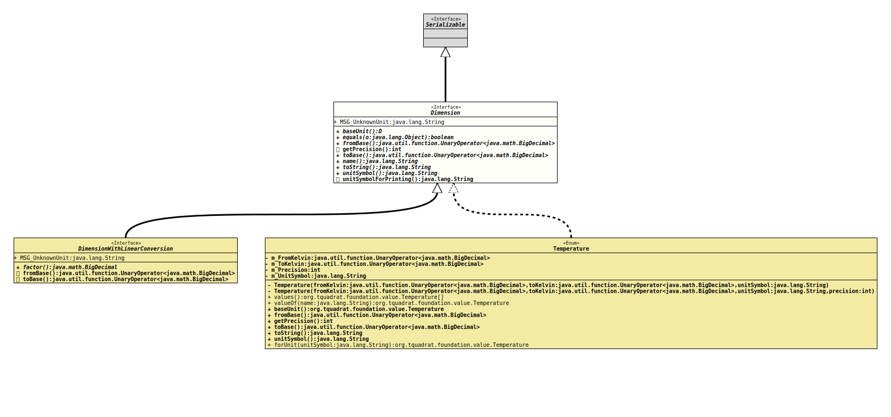

- All Superinterfaces:
Serializable
- All Known Subinterfaces:
DimensionWithLinearConversion
- All Known Implementing Classes:
Area,DataSize,Length,Mass,Pressure,Speed,Temperature,Time,Volume
The implementations of this interface are used to give
(numerical) values a dimension and a measuring unit. So 3.1415 is
just a number, but it could also stand for a length
(3.1415 m), a time (3.1415 s) or even the fuel
consumption of a car (3.1415 l/100 km). Depending on the
dimension, different values could be equal:
1.0 m == 100.0 cmand should be treated as such.
This interface should be implemented as
enums,
where the enum values are the units, and as such they should provide a
method to retrieve an enum value (a unit) by the respective
symbol.
- Author:
- Thomas Thrien (thomas.thrien@tquadrat.org)
- Version:
- $Id: Dimension.java 995 2022-01-23 01:09:35Z tquadrat $
- Since:
- 0.1.0
- UML Diagram
-

UML Diagram for "org.tquadrat.foundation.value.api.Dimension"
{kind=link}
-
Field Summary
Fields -
Method Summary
Modifier and TypeMethodDescription<D extends Dimension>
DbaseUnit()Returns the base unit.booleanfromBase()Returns the conversion that is used to convert a value from the base unit to this unit.default intReturns the default precision for this unit that is used when the respective value is converted to a String.name()Returns the internal name of the dimension.toBase()Returns the conversion that is used to convert a value from this unit to the base unit.toString()Returns the unit symbol for the dimension as a single line string.default StringReturns the unit symbol for the dimension still as a single line string, but with special characters.
-
Field Details
-
MSG_UnknownUnit
Message: Unknown Unit.- See Also:
-
-
Method Details
-
baseUnit
Returns the base unit.
E.g. for length, the base unit would be Meter (m), for mass, it is Kilogram (kg), and so on.
- Type Parameters:
D- The implementing class for the interface.- Returns:
- The base unit.
-
equals
Dimensions are equal when they are identical; therefore they should be implemented as Multitons (constants of the implementing class, without the option to create additional instances on runtime).
-
fromBase
Returns the conversion that is used to convert a value from the base unit to this unit.
- Returns:
- The conversion.
-
getPrecision
Returns the default precision for this unit that is used when the respective value is converted to a String.- Returns:
- The mantissa length for a value with this unit.
-
toBase
Returns the conversion that is used to convert a value from this unit to the base unit.
- Returns:
- The conversion.
-
name
Returns the internal name of the dimension.- Returns:
- The internal name.
-
toString
-
unitSymbol
Returns the unit symbol for the dimension as a single line string.
For a length, this would be "m", for a speed "km/h", and for an acceleration, it could be "m/(s^2)".
- Returns:
- The unit.
-
unitSymbolForPrinting
Returns the unit symbol for the dimension still as a single line string, but with special characters.
For a length, this would still be "m", for a speed "km/h", but for an acceleration, it would be "m/s²".
For most dimensions, this is the same as the return value of
unitSymbol().- Returns:
- The unit beautified for printing.
-